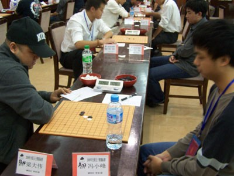
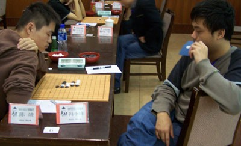

我的2009全国赛历程
#1 我的2009全国赛历程 作者：茗弈妙手 发表时间：2009-10-10 9:27:26
发一下自己的2009全国赛历程，主要总结一下自己的7轮比赛。10月2日15：00左右：到达比赛场地——颐园宾馆。
10月2日19：30：赛前会议；棋手归档、抽签；我得到A22签位。
10月3日：国庆长假第3天；中秋节；2009全国赛首轮；我的生日……
第一轮：对阵西北狼棋社陈亮。对手开瑞星我思考后不交换。执白顶住了对手60多手的进攻（其间给对手留下了一个理论杀，不过由于此杀不在我们当时的争夺焦点区域，因此两人都没注意到……）。之后，局面趋向绝对平稳，可时间对比上却是我剩32分钟他剩3分钟。而就在我想拍死对手的过程中，漏掉了对手的挣扎VCF……挂了。
第二轮：对阵四川汪清清。鉴于首轮消耗太大（苦战145分钟……），且对手的变化量有限，我采用了考对手某个局面的策略。结果对手没接住，谱杀（本轮我开局）。
第三轮：对阵北京李洋。对手开疏星我不交换。五手两打中，一个点复杂必败，另一个点是一打。此时，我认为，对手既然敢用必败骗我，此局面定是十分熟悉，我难保接得住。既如此，我便很有魄力地留下一打。稳守接近30手之后，对手无理进攻，我见机一举反先，胜。
（首日2胜1负，发挥基本良好，很对得起我的生日）
第四轮：对阵江苏陈靖。陈靖本是一名实力明显强于我的棋手，可惜本次比赛状态太差，没发挥出多少实力。本局我开疏星，给出一打二打，对手给我留下一打（也好这口？）。之后，在一系列攻防质量皆不佳的对抗之后，运气站到了我这边……
第五轮：对阵广东（炫飞？）贺启发。3胜1负的成绩把我推到了3台，但无奈的是我并没有坐3台的本事。本局贺启发开松月，我交换，5手被留下了三打。然而，在心态和技术双双绝对劣势的情况下，我走了一盘很烂的对局，挂了。
赛后，到贺启发老师的房间向他请教，并亲历了他与黄金贤的局面讨论，心服口服。
第六轮：对阵广东（似乎是）江齐文。宿敌。我开疏星，对手疯狂地选择交换。之后对手在开局阶段趁我立足不稳又疯狂进攻。我没顶住……
第七轮：对阵四川刘超。我与此人在ORC早已交手数次，只不过我是绝对下风……心理上毫无优势。本局对手开斜月，我交换，被留二打。由于开局阶段的大恶手，我迅速大劣，但之后却奇迹般地顶住了对手的所有进攻。由于对手的落点与我的所想出奇得一致，因此，至防守成功之时，对手剩20分钟，我却有70分钟。然而，与首轮对陈亮那局类似——我又在挺过风浪该享福的时候莫名其妙地大昏招，挂了。
名次轮：对阵炫飞梁大伟。我开疏星，对手在无心恋战的情况下故意给出超弱4。于是我获胜，最终取得33名（还是很差……）。
本次比赛，我3胜4负后赢得名次轮，最终在诸强中位列33名。整个过程可谓是高开低走：最高时打到了3台，之后便不断失利，依次降到6台、9台。由于本次比赛一排座位有3个台次，因此，从效果上来看，我很戏剧地从第1排（3台）退到第2排（6台）再退到第3排（9台）……当然，最终还是没有实现拿4分的赛前目标，这也只能说是自己的实力还不够。文末，希望来年（或者说下一次）比赛，自己能表现得再好一点。
［ 无尽 于 2009-10-10 9:43:41 时奖励此帖[金币加 20 威望加1］
［ 黄药师 于 2009-10-10 10:48:47 时花20金币送鲜花一朵］
［ 茗弈小刀 于 2009-10-10 11:59:24 时花20金币送鲜花一朵］
［ 五子痴 于 2009-10-10 21:48:28 时花20金币送鲜花一朵］
［ 梦醉南天 于 2009-10-24 10:31:03 时花20金币送鲜花一朵］
#2 Re:我的2009全国赛历程 作者：茗弈妙手 发表时间：2009-10-10 9:29:35
大雪触底反弹，我却是高开低走。心理上，恐怕我更不好接受，呵呵。另外，大雪要注意了，前22绝不是这么容易的。就现在来说，提高实力才是第一位！
不好意思发棋谱了，质量真的很一般……
#3 Re:我的2009全国赛历程 作者：玉水凌风 发表时间：2009-10-10 10:06:42
原来是贴吧的前辈 失敬 昨天在桌上和姐姐聊天的也应该是您了 我真是眼拙
#4 Re:Re:我的2009全国赛历程 作者：刀魂 发表时间：2009-10-10 10:20:02
引用：
原文由 玉水凌风 发表于 2009-10-10 10:06:42 :
原来是贴吧的前辈 失敬 昨天在桌上和姐姐聊天的也应该是您了 我真是眼拙我也会笑：
#5 Re:我的2009全国赛历程 作者：玉水凌风 发表时间：2009-10-10 10:23:24
 传说中的 刀魂大师 额 额额哦哦 额
传说中的 刀魂大师 额 额额哦哦 额
#6 Re:我的2009全国赛历程 作者：茗弈小刀 发表时间：2009-10-10 11:59:15
妙手加油哟！我看好你！#7 Re:我的2009全国赛历程 作者：岑小鱼 发表时间：2009-10-10 16:22:50
加油
#8 Re:我的2009全国赛历程 作者：玉水凌风 发表时间：2009-10-10 21:38:07
妙手加油 油油油油#9 Re:我的2009全国赛历程 作者：五子痴 发表时间：2009-10-10 21:50:59
没有人天生就会赢棋，你现在积累的宝贵经验是你以后战胜困难险阻的动力！#10 Re:我的2009全国赛历程 作者：大雪无痕 发表时间：2009-10-11 6:03:24
 支持一下，共同努力
支持一下，共同努力
#11 Re:我的2009全国赛历程 作者：茗弈宽容 发表时间：2009-10-12 12:32:41
发2张妙手的比赛靓照顺便招个老婆。

#12 Re:我的2009全国赛历程 作者：茗弈妙手 发表时间：2009-10-12 13:10:46

#13 Re:我的2009全国赛历程 作者：周光乐 发表时间：2009-10-12 16:33:59
强烈支持